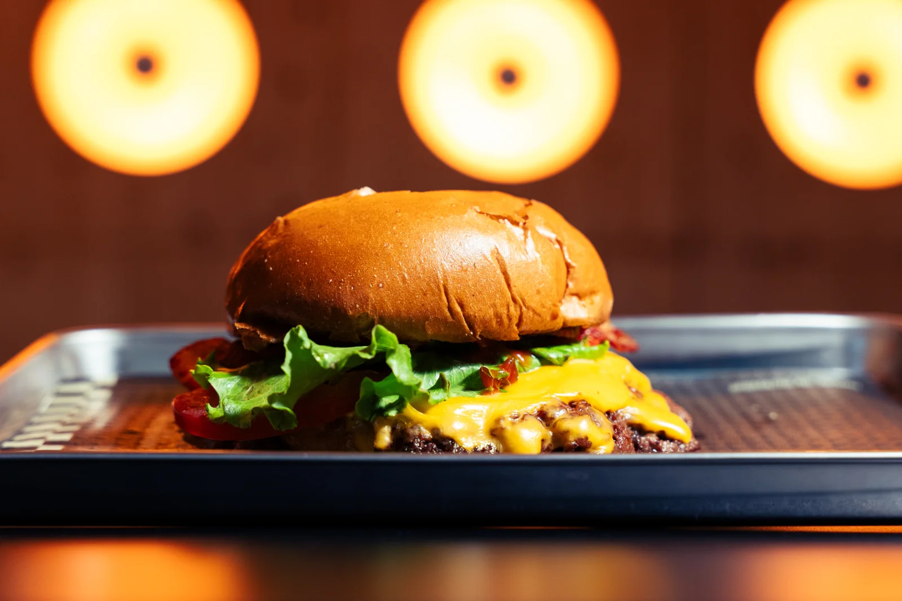
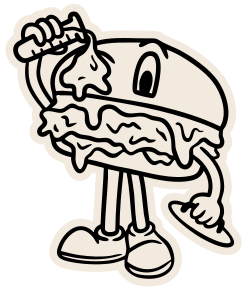

Smash burger a Rimini · Marina Centro
Smash.
Morso.
Repeat.
Smash burger, cheddar e fritti.
Ci trovi a cena in Marina Centro, Rimini.


Il passaparola, quello buono.
Dicono di noi.
Cinque recensioni a 5 stelle su Google, riportate integralmente.
Mi sono sentito bene. I ragazzi di Smash Lab hanno proprio ricercato la qualità del prodotto, impeccabile. Ho mangiato un Oklahoma double smash e patatine con cheddar e bacon, insieme ad una birra piccola. Totale: 24,50€, un po’ caro secondo me. Voto: 8.5/10 per panino, 7/10 per le patatine. La proposta sfida un po’ la richiesta locale di Rimini, che a mio avviso riguarda più altro come pesce o piadine. Il locale è molto curato. Il personale è fatto da ragazzi con voglia di fare. La posizione è ottima.
Pro: Qualità del cibo super, ambiente tranquillo, servizio iper veloce
Contro: Prezzo, troppo alto secondo me
bella location, servizio ottimo, abbiamo aspettato circa una ventina di minuti per 5 hamburger quindi neanche troppo, prezzi forse leggermente alti ma sono completamente giustificati poichè il panino e le patatine sono veramente buonissimi. unica pecca, purtroppo, era che essendo pieni tutti i tavoli fuori ci siamo dovuti sedere dentro dove c’era l’aria condizionata spenta e faceva abbastanza caldo. Per il resto posto consigliatissimo e 5 stelle meritate perché si mangia veramente bene.
Patatine e smash spaziali, veramente tutto buono e ci hanno servito anche velocemente.
Unica pecca, non ho ben capito la scelta di mettere il cheddar sul fondo delle patatine, abbiamo comunque raschiato il fondo pur di mangiarlo, però avrei apprezzato fosse completamente sulle patatine.
É la seconda volta che ceniamo allo smash Lab, come nella prima occasione siamo stati benissimo. I panini molto buoni, precisi come in foto, buonissimi sia quelli con la carne che con il pollo. Buone e particolari le salse che puoi aggiungere. Nota positiva anche per le patatine fritte, pienissime di cheddar e bacon. In generale un bel menu, bella scelta di panini. Sicuramente ritorneremo.
Ho mangiato da questi ragazzi già in più occasioni, sia con consegna a domicilio che sul posto. Mi sono sempre trovato bene, mangio dei panini incredibili e sempre uguali, le patatine più buone che ci siano in giro. È consigliatissimo. Bravi ragazzi, continuate cosi